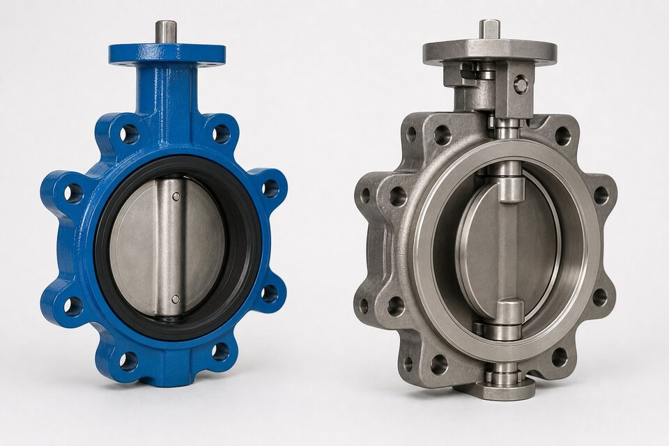

جایگاه مرجع شیر پروانهای
این مرجع، الزامات طراحی، ابعاد، متریال، تست و علامتگذاری شیرهای پروانهای را تعریف میکند و دستهبندیهای تمرکز و آفست را پوشش میدهد. استناد به آن، زبان مشترک خریدار و سازنده برای این خانواده است.

طرحهای تمرکز و آفست
| طرح | نشیمنگاه | کاربرد |
|---|---|---|
| تمرکز | نرم، سایش در کل مسیر | آب و تاسیسات عمومی |
| تکآفست | بهبود سایش | سرویسهای عمومیتر |
| دوآفست | نرم یا فلزی، سایش کمتر | فرایند و فشار متوسط |
| سهآفست | فلزی مخروطی | دمای بالا و سرویس سخت |
تست و کلاس نشتی
- تست بدنه و نشیمنگاه مطابق مرجع تست شیرآلات.
- کلاس نشتی متناسب با طرح و سفارش.
- کنترل گشتاور عملکرد در تحویل.
- مدارک تست و گواهی مواد.
معیارهای انتخاب
- سیال، دما و فشار را مشخص کنید.
- طرح تمرکز یا آفست را بر اساس سرویس انتخاب کنید.
- نشیمنگاه نرم یا فلزی را متناسب با دما برگزینید.
- سایز و کلاس را با خط هماهنگ کنید.
- نوع عملگر را در صورت اتوماسیون مشخص کنید.
دستهبندی فشاری مرجع
مرجع، شیرهای پروانهای را در دستههای فشاری تعریف میکند که الزامات طراحی و تست هر دسته را مشخص میسازد. دستههای پایینتر معمولاً برای سرویسهای عمومی با نشیمنگاه نرم و دستههای بالاتر برای سرویسهای سختتر با طرحهای آفست و نشیمنگاه فلزی کاربرد دارند.
گشتاور و محرک
- گشتاور مورد نیاز شیر باید با حاشیه مناسب برای محرک محاسبه شود.
- افت فشار و شرایط سیال بر گشتاور اثر دارد.
- در اتوماسیون، وضعیتهای ایمن محرک مشخص شود.
- دستیسازی اضطراری در نقاط حساس در نظر گرفته شود.
کاربردهای هر طرح
| طرح | کاربرد رایج |
|---|---|
| تمرکز | آب، تهویه، تاسیسات |
| دوآفست | فرایند عمومی و فشار متوسط |
| سهآفست | دمای بالا، هیدروکربن و سرویس سخت |
انتخاب بین طرحها در نهایت به معادله دما، فشار، نشتی و بودجه بازمیگردد. در بسیاری از پروژهها ترکیبی از طرحها استفاده میشود: تمرکز برای شبکه آب، دوآفست برای فرایند عمومی و سهآفست برای نقاط سخت. تعریف این نقشه پیش از استعلام، از خرید پراکنده و نامتجانس جلوگیری میکند.
جمعبندی
خانواده پروانهای با طرحهای متنوع، از تاسیسات تا سرویسهای سخت را پوشش میدهد. انتخاب درست، تطابق طرح و نشیمنگاه با سرویس است.
سوالات رایج
تفاوت اصلی طرحهای تمرکز و آفست چیست؟
در طرح تمرکز، ساقه در مرکز دیسک است و نشیمنگاه در کل مسیر سایش دارد؛ در طرحهای آفست، دیسک هنگام بسته شدن روی نشیمنگاه کشیده نمیشود و عمر و آببندی بهتر میشود.
آفست سهتایی چه مزیتی دارد؟
آفست سهتایی با نشیمنگاه فلزی مخروطی، امکان آببندی بهتر در دما و فشار بالاتر را فراهم میکند و برای سرویسهای سختتر از طرحهای نرم مناسبتر است.
کلاسهای فشار این شیرها تا کجاست؟
معمولاً از کلاسهای پایین تا کلاسهای متوسط و در طرحهای پیشرفته بالاتر نیز عرضه میشوند. محدوده دقیق را مرجع و جداول سازنده مشخص میکند.
برای چه سرویسهایی پروانهای انتخاب میشود؟
آب و تاسیسات، خطوط بزرگ قطر با فشار متوسط، و در طرحهای فلزی برای سرویسهای فرایندی که افت فضا و هزینه اهمیت دارد.
مطالب مرتبط
- راهنمای جامع شیر پروانهای
- مقایسه شیر توپی و دروازهای
- مرجع طراحی شیرآلات (ASME B16.34)
- راهنمای انتخاب شیر بر اساس سیال
- راهنمای انتخاب محرک شیرآلات
با ذکر سایز، کلاس، نوع طرح و نشیمنگاه، شیر پروانهای مناسب به همراه مدارک کامل عرضه میشود.
مشاهده صفحه محصول ← ثبت RFQ همین محصولتامین این تجهیزات را به پیشرو تجهیز فرتاک بسپارید
شرکت پیشرو تجهیز فرتاک تامینکننده تخصصی تجهیزات صنعتی برای پروژههای نفت، گاز، پتروشیمی، فولاد و نیروگاهی است. برای دریافت پیشنهاد فنی و قیمت، استعلام (RFQ) خود را ثبت کنید تا کارشناسان مهندسی فروش در کوتاهترین زمان پاسخ دهند.
- تامین شیرآلات صنعتیخانواده کامل شیر با گواهی مواد
- تامین تجهیزات پایپینگاتصالات هماهنگ با شیر